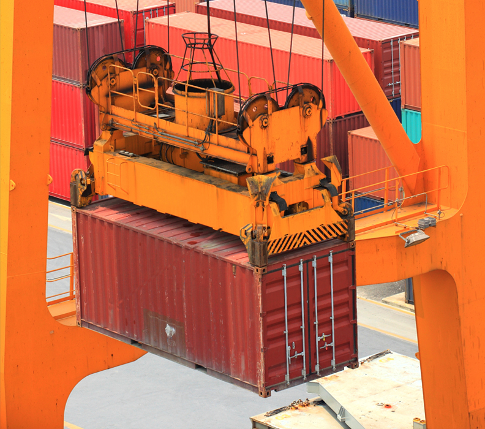
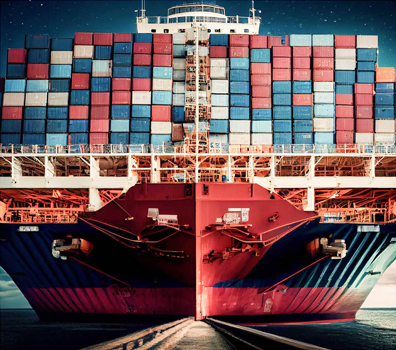

직접 사용해 보시면,
스마트 물류의 새로운 길이 보입니다.
our solutions
해상물류의 혁신적 효율성을 제공합니다
AI 및 머신러닝모델을 활용하여 전 세계 선박의
도착시간을 정확히 예측하고, 항구의 혼잡상황을 지속적으로
계산하여 신뢰할수 있는 정보를 제공합니다
CARGO INSIGHT
해상 화물 추적
빅데이터 기반의 머신러닝을
활용하여 신뢰할 수 있는
선박 도착 예측 정보를 제공합니다.
PORT INSIGHT
항구 & 터미널
실시간 혼잡도 분석
항구 정체 상황을 모니터링하고
미리 대비하세요.
SHIP INSIGHT
AIS 기반 실시간
선박 위치 추적
위치 정보 그 이상의
인사이트를 확인하세요.
- Cargo Insight
- Port Insight
- Ship Insight


AI기반 데이터 분석으로 검증된
공급망 가시화 플랫폼
이미 수많은 기업들은 씨벤티지를 이용합니다.
우리의 데이터는
강력합니다
빅데이터 분석과 AI 기술을 기반으로,
실시간 및 예측 정보가 반영된 공급망 가시화 솔루션을 제공합니다.
- 선박 0+
- 항구 0+
- 선사스케줄 0%

해상 경로 시각화MORE 

정확한 도착시간 예측MORE
해양 빅데이터 통합MORE
SUITABLE FOR
해양 공급망 가사화 플랫폼으로 경쟁력을 확보하세요
CUSTOMER STORY
씨벤티지를 이용한 기업들의
리얼한 리뷰입니다.
-
화주들이 원하는 높은 수준의 가시화 서비스를
빠르게 구현할 수 있었습니다. 기존 방식으로 수집된 데이터의 부정확, 누락, 지연 등의 문제를
실시간 데이터 분석을 통해 업무에 활용할 수 있는 정보로
제공해 주는 것이 매우 인상적입니다.
화주분들께 선박 지연 및 항구 혼잡 상황을 적시에 알리고
그에 맞는 대안을 제시할 수 있어 높은 수준의 가시화 서비스를
구현하였습니다.
-
AIS 커버리지가 가장 넓고 업데이트가
실시간에 가까워 유용하게 사용하고 있습니다. 씨벤티지가 제공하는 예측정보와 필수적인 데이터로
선적 계획부터, 실시간 추적까지 큰 도움이 되고 있습니다.
또한 실시간 Port/Terminal 정보는 화주 서비스를 위해
매우 유용합니다.
NEWS & BLOG
글로벌 공급망 소식 및 인사이트를 확인해 보세요!
뉴스
블로그